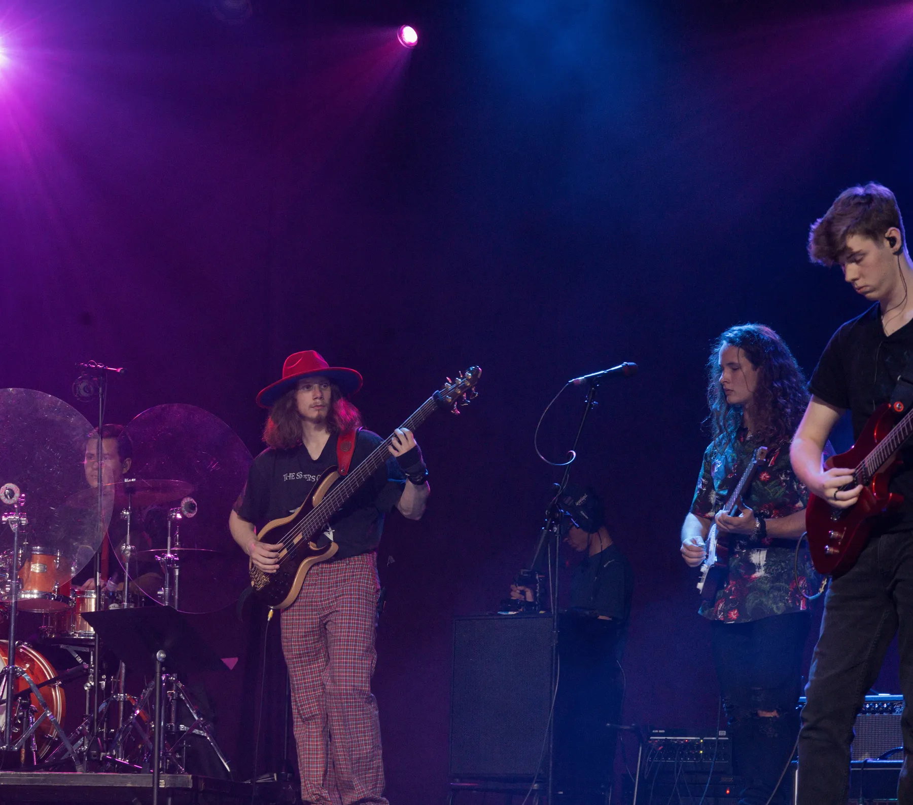

Bye Bye Blackbird
Benji Stiles and Harper Krimm
Music & photos
Live recordings, session releases, and photographs from jazz, commercial, orchestral, and percussion performances.

Audio
Benji Stiles and Harper Krimm
Luke Smith Quartet
AU Jazz Combo
AU Jazz Combo
Session work
Selected recordings featuring performance or studio contributions by Benji.
Photographs
Select a photograph to enlarge it.